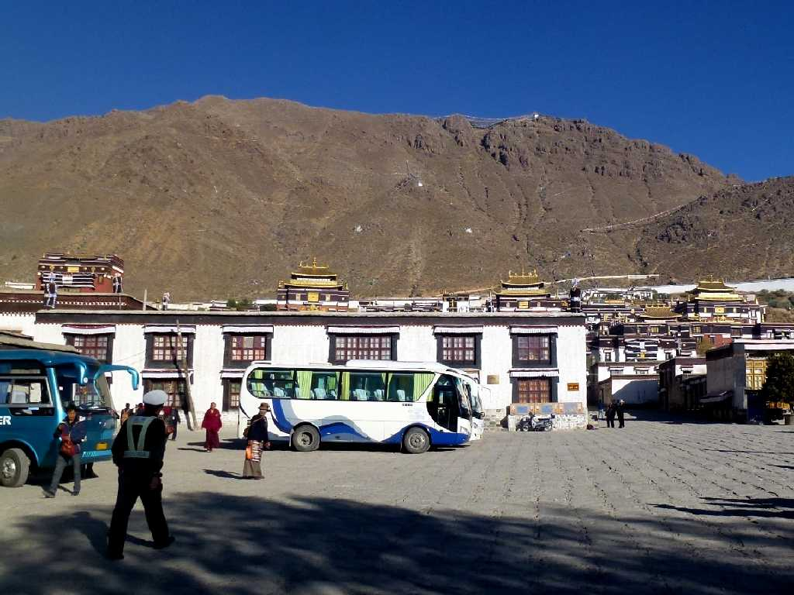
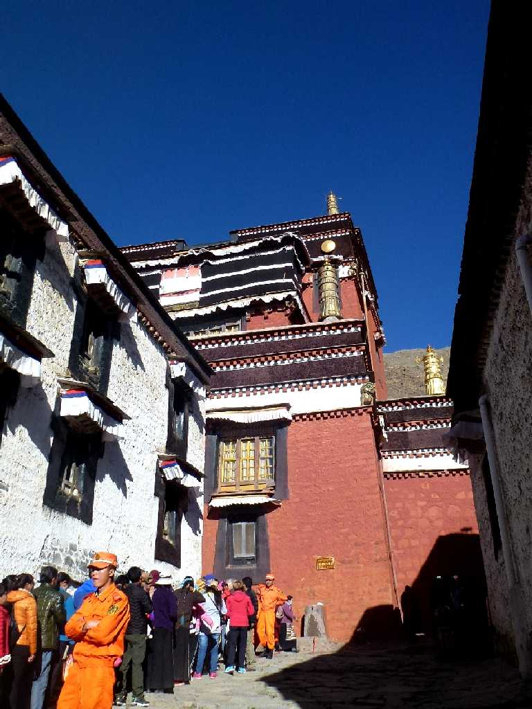
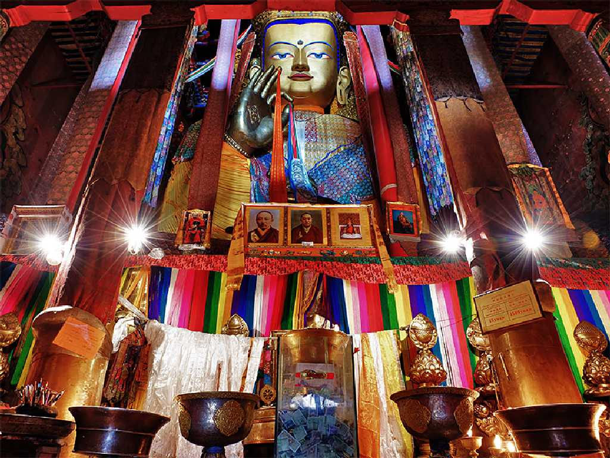
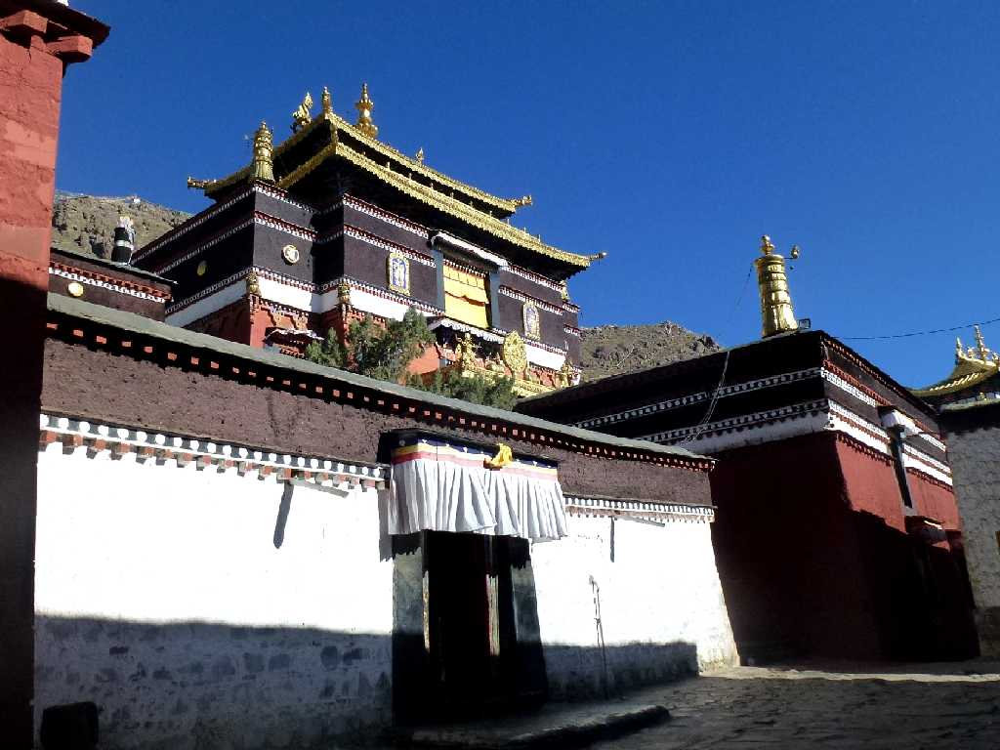
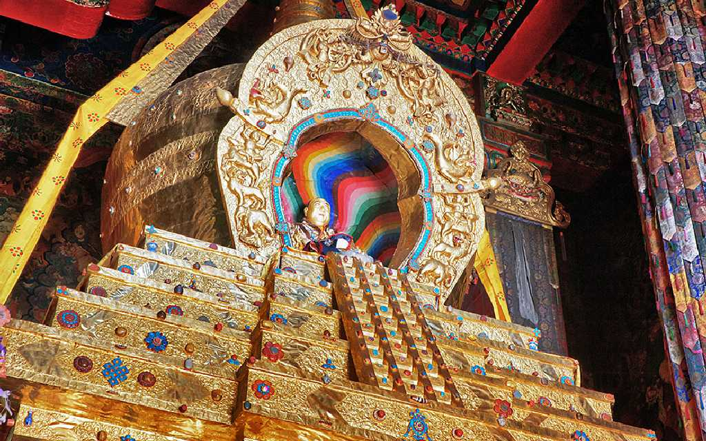
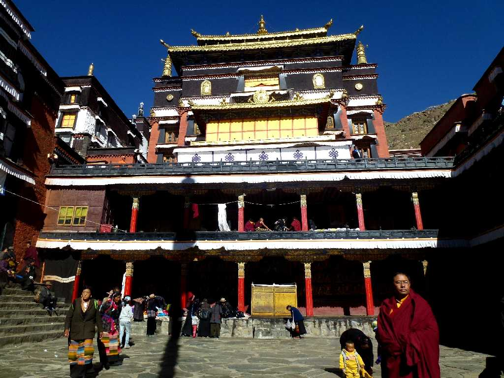
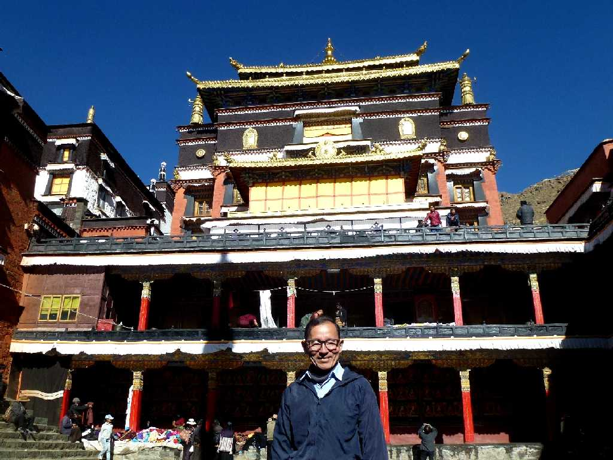

Tashilhunpo Monastery Shigatse Tibet 西藏 日喀则 扎什伦布寺
１４４７年にダライラマ１世が創建したタシルンポ寺 最盛期には４,７００人の僧侶を擁していたチベット仏教ゲルク派最大の僧院

Maitreya Hall Tashilhunpo Monastery 扎什伦布寺 大弥勒殿
世界最大の弥勒座像 蓮華座３.8ｍ弥勒座像２２.6ｍ

Maitreya Tashilhunpo Monastery 扎什伦布寺 大弥勒

Panchen Lama 10th Tashilhunpo Monastery

Panchen Lama 10th Tomb Tashilhunpo Monastery
金５００ｋｇを用いて創られたパンチェンラマ１０世のミイラを納めた廟

Tashilhunpo Monastery

October 23 2014 Tashilhunpo Monastery